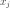

标准模型
| 文章分类: | Optimization |
|---|---|
| 创建时间: | 2013年4月 |
模型设定
线性规划模型通常表述为精炼的数学形式，包括三个部分：
- 目标函数，通常是最大化利润或最小化成本。
- 约束条件，通常表现为等式或不等式。
- 变量边界，通常是 。
任何线性模型，在求解和分析前都应该转换为标准形：
即将约束条件中的不等式统一转换为等式。需要注意该标准模型要求 。
线性规划模型的变量  一般定义为产量。线性模型标准型中的系数也都可以对应实际经济问题的要素：
- 右边常数 ——资源向量。
- 目标函数系数 ——最大化问题通常对应收益问题，因此目标函数系数称为价格向量；最小化问题通常对应成本问题，因此目标函数系数称为成本向量。
- 约束条件系数 ——技术矩阵。
模型变换
线性规划模型的约束条件存在以下三种形式：
在求解线性规划问题时，需要将两种不等式转换为标准型中的等式，因此需要掌握转换方法。
目标函数变换
线性规划模型的目标函数只有两种形式：最大化模型和最小化模型。两者之间的变换可以简单地将目标函数系数的符号取反，就可以将最大化函数转换为最小化函数，反之亦然。
不等式间变换
约束条件中 可以变换为 ，反之亦反。
不等式变换等式
模型中的任何不等式都可以在引入一个非负变量后变换为一个等式。
- 可变换为 ，其中 ；
- 可变换为 ，其中 。
其中：
- 原有变量 称为 结构变量；
- 引入变量 称为 松弛变量；
- 引入变量 称为 剩余变量。
变量边界变换
如果线性模型中某些 的 符号不限，存在三种变换方法，要求掌握变量分解法：将 表示为两个非负变量之差，并用该差值替换所有 。即：
该变换会增加模型的变量数目，但可保留原始关系中的线性属性。